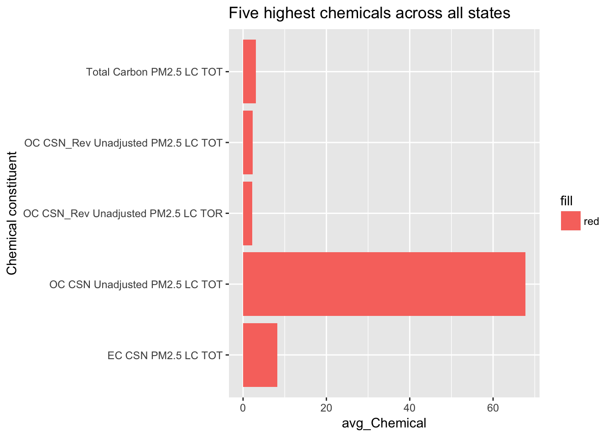
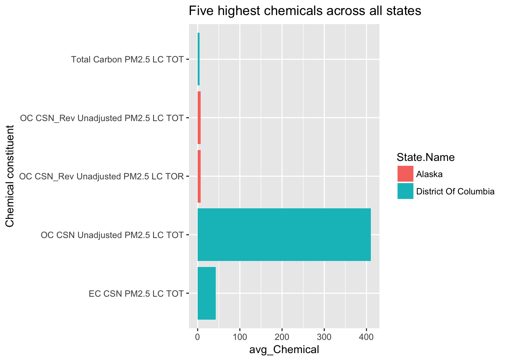
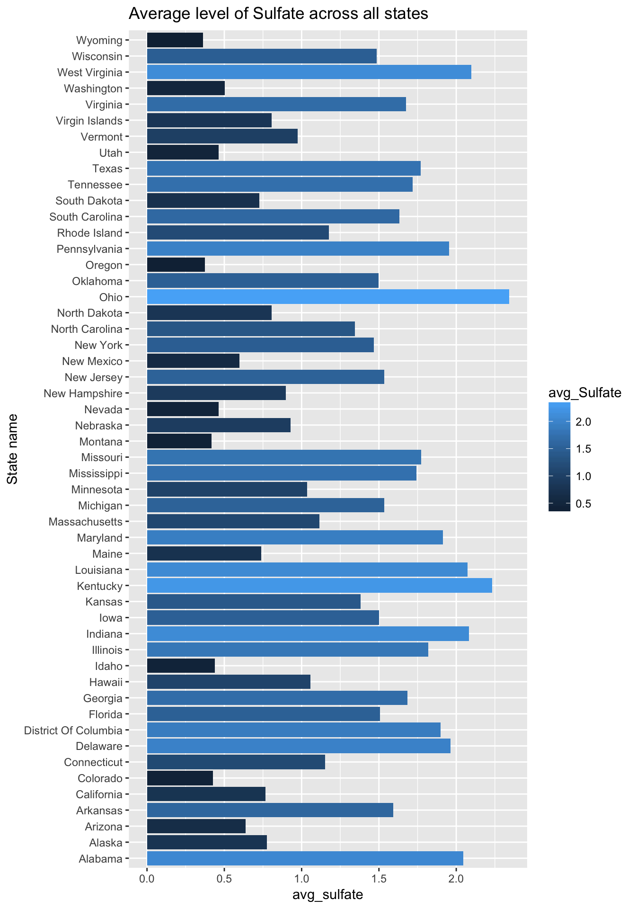
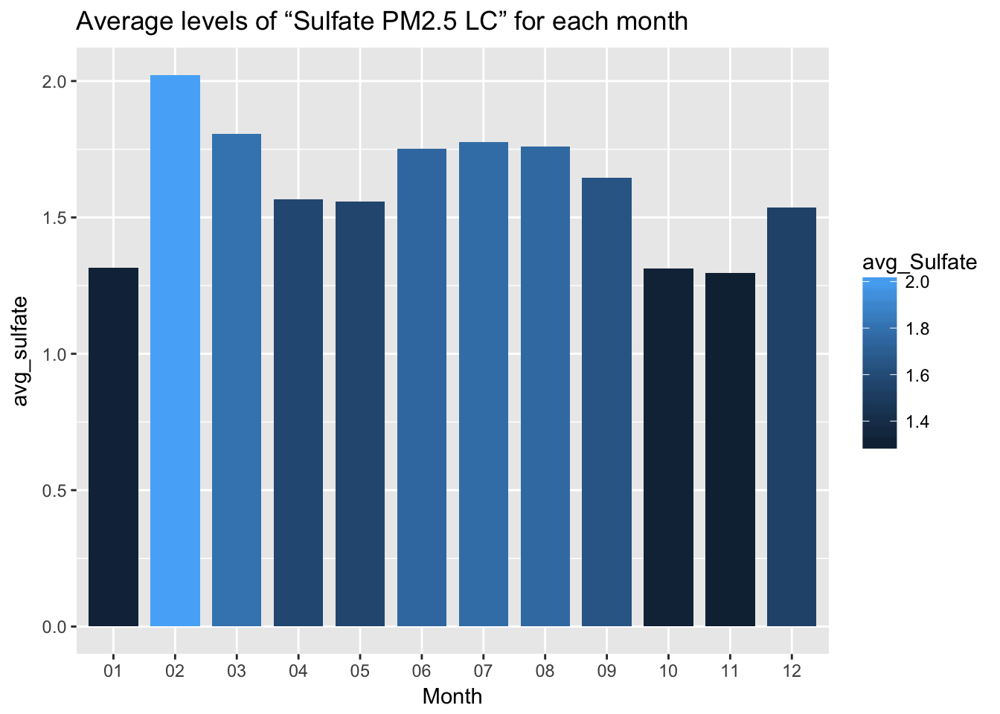
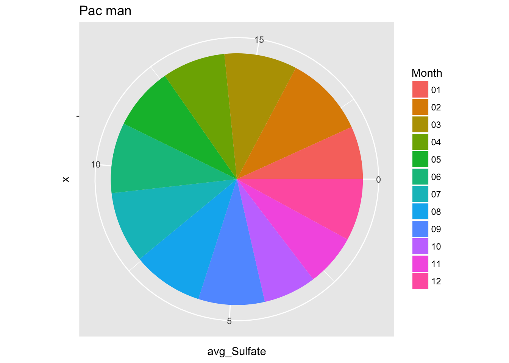

library(readr)
library(dplyr)
chemical <- read_csv("data/daily_SPEC_2014.csv.bz2", col_types = "cccciddcccccccidddicccccccccc",progress = F)
names(chemical) <- make.names(names(chemical))
chemical <- rename(chemical, Site.Number = Site.Num)
chemical$Date.Local <- as.Date(chemical$Date.Local)
glimpse(chemical)## Observations: 2,108,467
## Variables: 29
## $ State.Code <chr> "01", "01", "01", "01", "01", "01", "01", ...
## $ County.Code <chr> "003", "003", "003", "003", "003", "003", ...
## $ Site.Number <chr> "0010", "0010", "0010", "0010", "0010", "0...
## $ Parameter.Code <chr> "68105", "68105", "68105", "68105", "68105...
## $ POC <int> 1, 1, 1, 1, 1, 1, 1, 1, 1, 1, 1, 1, 1, 1, ...
## $ Latitude <dbl> 30.498, 30.498, 30.498, 30.498, 30.498, 30...
## $ Longitude <dbl> -87.88141, -87.88141, -87.88141, -87.88141...
## $ Datum <chr> "NAD83", "NAD83", "NAD83", "NAD83", "NAD83...
## $ Parameter.Name <chr> "Ambient Temperature", "Ambient Temperatur...
## $ Sample.Duration <chr> "24 HOUR", "24 HOUR", "24 HOUR", "24 HOUR"...
## $ Pollutant.Standard <chr> NA, NA, NA, NA, NA, NA, NA, NA, NA, NA, NA...
## $ Date.Local <date> 2014-01-02, 2014-01-05, 2014-01-08, 2014-...
## $ Units.of.Measure <chr> "Degrees Centigrade", "Degrees Centigrade"...
## $ Event.Type <chr> "None", "None", "None", "None", "None", "N...
## $ Observation.Count <int> 1, 1, 1, 1, 1, 1, 1, 1, 1, 1, 1, 1, 1, 1, ...
## $ Observation.Percent <dbl> 100, 100, 100, 100, 100, 100, 100, 100, 10...
## $ Arithmetic.Mean <dbl> 10.9, 14.1, 0.7, 17.9, 12.7, 11.0, 9.1, 6....
## $ X1st.Max.Value <dbl> 10.9, 14.1, 0.7, 17.9, 12.7, 11.0, 9.1, 6....
## $ X1st.Max.Hour <int> 0, 0, 0, 0, 0, 0, 0, 0, 0, 0, 0, 0, 0, 0, ...
## $ AQI <chr> NA, NA, NA, NA, NA, NA, NA, NA, NA, NA, NA...
## $ Method.Code <chr> "118", "118", "118", "118", "118", "118", ...
## $ Method.Name <chr> "R & P Model 2025 PM2.5 Sequent - Electron...
## $ Local.Site.Name <chr> "FAIRHOPE, Alabama", "FAIRHOPE, Alabama", ...
## $ Address <chr> "FAIRHOPE HIGH SCHOOL, FAIRHOPE, ALABAMA"...
## $ State.Name <chr> "Alabama", "Alabama", "Alabama", "Alabama"...
## $ County.Name <chr> "Baldwin", "Baldwin", "Baldwin", "Baldwin"...
## $ City.Name <chr> "Fairhope", "Fairhope", "Fairhope", "Fairh...
## $ CBSA.Name <chr> "Daphne-Fairhope-Foley, AL", "Daphne-Fairh...
## $ Date.of.Last.Change <chr> "2015-02-02", "2015-02-02", "2015-02-02", ...chemical %>%
filter(Parameter.Name == "Bromine PM2.5 LC" & State.Name == "Wisconsin") %>%
summarize(avg_Bromine = mean(Arithmetic.Mean, na.rm = T)) ## # A tibble: 1 × 1
## avg_Bromine
## <dbl>
## 1 0.003960482library(ggplot2)## Warning: package 'ggplot2' was built under R version 3.3.2chemical %>%
filter(grepl("PM2.5", Parameter.Name)) %>%
group_by(Parameter.Name) %>%
summarize(avg_Chemical = mean(Arithmetic.Mean, na.rm = T)) %>%
arrange(desc(avg_Chemical)) %>%
head(5) %>%
ggplot(aes(x = Parameter.Name, y = avg_Chemical, fill = "red")) +
geom_bar(stat="identity") +
coord_flip() +
xlab("Chemical constituent") +
ggtitle("Five highest chemicals across all states")
chemical %>%
filter(grepl("PM2.5", Parameter.Name)) %>%
group_by(State.Name, Parameter.Name) %>%
summarize(avg_Chemical = mean(Arithmetic.Mean, na.rm = T)) %>%
arrange(desc(avg_Chemical)) %>%
head(5) %>%
ggplot(aes(x = Parameter.Name, y = avg_Chemical, fill = State.Name)) +
geom_bar(stat="identity") +
coord_flip() +
xlab("Chemical constituent") +
ggtitle("Five highest chemicals across all states")
## Source: local data frame [358 x 4]
## Groups: State.Code, County.Code [313]
##
## State.Code County.Code Site.Number avg_Sulfate
## <chr> <chr> <chr> <dbl>
## 1 39 081 0017 3.182189
## 2 42 003 0064 3.055483
## 3 54 039 1005 2.938800
## 4 18 019 0006 2.738700
## 5 39 153 0023 2.706449
## 6 39 035 0060 2.640185
## 7 39 087 0012 2.638311
## 8 54 051 1002 2.619043
## 9 21 111 0067 2.549750
## 10 18 037 2001 2.516367
## # ... with 348 more rows
## # A tibble: 1 × 1
## diff
## <dbl>
## 1 0.01856696## # A tibble: 1 × 1
## median
## <dbl>
## 1 0.43library(readxl)
data_aqs <- read_excel("data/aqs_sites.xlsx", col_names = T, col_types = c("text", "text", "text", "numeric", "numeric", "text", "numeric", "text", "text", "date", "date", "blank", "blank", "blank", "blank", "blank", "blank", "numeric", "text", "text", "text", "numeric", "text", "text", "text", "blank", "blank", "date"))names(data_aqs) <- make.names(names(data_aqs))
glimpse(data_aqs)## Observations: 20,239
## Variables: 20
## $ State.Code <chr> "1", "1", "1", "1", "1", "1", "1", "1", ...
## $ County.Code <chr> "1", "1", "1", "3", "3", "3", "3", "5", ...
## $ Site.Number <chr> "1", "2", "3", "1", "2", "3", "10", "1",...
## $ Latitude <dbl> 32.43746, 32.42833, 32.33266, 0.00000, 3...
## $ Longitude <dbl> -86.47289, -86.44361, -86.79152, 0.00000...
## $ Datum <chr> "WGS84", "NAD27", "WGS84", "NAD27", "WGS...
## $ Elevation <dbl> 64.00, 0.00, 41.00, 0.00, 0.00, 49.00, 3...
## $ Land.Use <chr> "RESIDENTIAL", "AGRICULTURAL", "FOREST",...
## $ Location.Setting <chr> "SUBURBAN", "RURAL", "RURAL", "RURAL", "...
## $ Site.Established.Date <dttm> 1974-05-01, 1980-01-01, 1989-08-31, 195...
## $ Site.Closed.Date <dttm> 1976-12-31, 1982-12-31, 1990-11-30, 195...
## $ GMT.Offset <dbl> -6, -6, -6, -6, -6, -6, -6, -6, -6, -6, ...
## $ Owning.Agency <chr> "Al Dept Of Env Mgt", "Al Dept Of Env ...
## $ Local.Site.Name <chr> NA, NA, NA, NA, NA, NA, "FAIRHOPE, Alaba...
## $ Address <chr> "KING ARTHUR TRAILER COURT, PRATTVILLE,A...
## $ Zip.Code <dbl> 36067, NA, 36003, NA, 36567, NA, 36532, ...
## $ State.Name <chr> "Alabama", "Alabama", "Alabama", "Alabam...
## $ County.Name <chr> "Autauga", "Autauga", "Autauga", "Baldwi...
## $ City.Name <chr> "Prattville", "Prattville", "Not in a Ci...
## $ Extraction.Date <dttm> 2016-07-07, 2016-07-07, 2016-07-07, 201...## # A tibble: 1 × 1
## n_obs
## <int>
## 1 3527## # A tibble: 20,239 × 7
## State.Code County.Code Site.Number Land.Use Location.Setting
## <chr> <chr> <chr> <chr> <chr>
## 1 1 1 1 RESIDENTIAL SUBURBAN
## 2 1 1 2 AGRICULTURAL RURAL
## 3 1 1 3 FOREST RURAL
## 4 1 3 1 UNKNOWN RURAL
## 5 1 3 2 COMMERCIAL RURAL
## 6 1 3 3 COMMERCIAL URBAN AND CENTER CITY
## 7 1 3 10 COMMERCIAL SUBURBAN
## 8 1 5 1 COMMERCIAL SUBURBAN
## 9 1 5 2 FOREST SUBURBAN
## 10 1 7 1 AGRICULTURAL RURAL
## # ... with 20,229 more rows, and 2 more variables: Longitude <dbl>,
## # Latitude <dbl>## # A tibble: 2,108,467 × 7
## State.Code County.Code Site.Number State.Name Parameter.Name
## <chr> <chr> <chr> <chr> <chr>
## 1 1 3 10 Alabama Ambient Temperature
## 2 1 3 10 Alabama Ambient Temperature
## 3 1 3 10 Alabama Ambient Temperature
## 4 1 3 10 Alabama Ambient Temperature
## 5 1 3 10 Alabama Ambient Temperature
## 6 1 3 10 Alabama Ambient Temperature
## 7 1 3 10 Alabama Ambient Temperature
## 8 1 3 10 Alabama Ambient Temperature
## 9 1 3 10 Alabama Ambient Temperature
## 10 1 3 10 Alabama Ambient Temperature
## # ... with 2,108,457 more rows, and 2 more variables:
## # Arithmetic.Mean <dbl>, Date.Local <date>## # A tibble: 2,108,467 × 11
## State.Code County.Code Site.Number State.Name Parameter.Name
## <chr> <chr> <chr> <chr> <chr>
## 1 1 3 10 Alabama Ambient Temperature
## 2 1 3 10 Alabama Ambient Temperature
## 3 1 3 10 Alabama Ambient Temperature
## 4 1 3 10 Alabama Ambient Temperature
## 5 1 3 10 Alabama Ambient Temperature
## 6 1 3 10 Alabama Ambient Temperature
## 7 1 3 10 Alabama Ambient Temperature
## 8 1 3 10 Alabama Ambient Temperature
## 9 1 3 10 Alabama Ambient Temperature
## 10 1 3 10 Alabama Ambient Temperature
## # ... with 2,108,457 more rows, and 6 more variables:
## # Arithmetic.Mean <dbl>, Date.Local <date>, Land.Use <chr>,
## # Location.Setting <chr>, Longitude <dbl>, Latitude <dbl>## # A tibble: 1 × 1
## median
## <dbl>
## 1 0.61## # A tibble: 2,108,467 × 8
## State.Code County.Code Site.Number State.Name Parameter.Name
## <chr> <chr> <chr> <chr> <chr>
## 1 1 3 10 Alabama Ambient Temperature
## 2 1 3 10 Alabama Ambient Temperature
## 3 1 3 10 Alabama Ambient Temperature
## 4 1 3 10 Alabama Ambient Temperature
## 5 1 3 10 Alabama Ambient Temperature
## 6 1 3 10 Alabama Ambient Temperature
## 7 1 3 10 Alabama Ambient Temperature
## 8 1 3 10 Alabama Ambient Temperature
## 9 1 3 10 Alabama Ambient Temperature
## 10 1 3 10 Alabama Ambient Temperature
## # ... with 2,108,457 more rows, and 3 more variables:
## # Arithmetic.Mean <dbl>, Date.Local <date>, Month <chr>

## [1] 11## Source: local data frame [1 x 4]
## Groups: State.Code, County.Code [1]
##
## State.Code County.Code Site.Number cor
## <chr> <chr> <chr> <dbl>
## 1 2 90 35 0.8978038